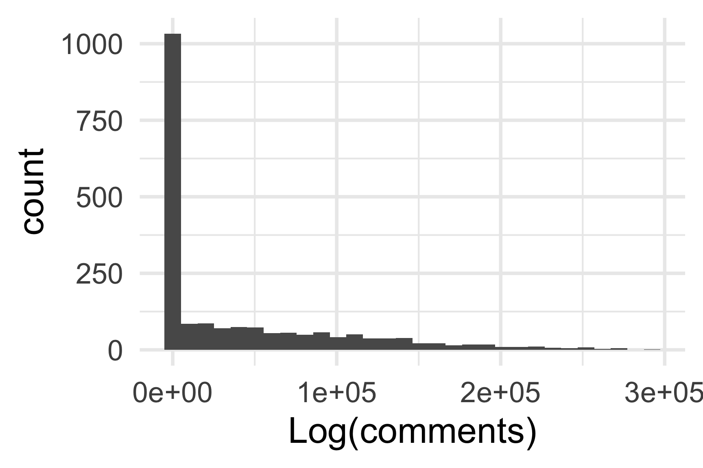
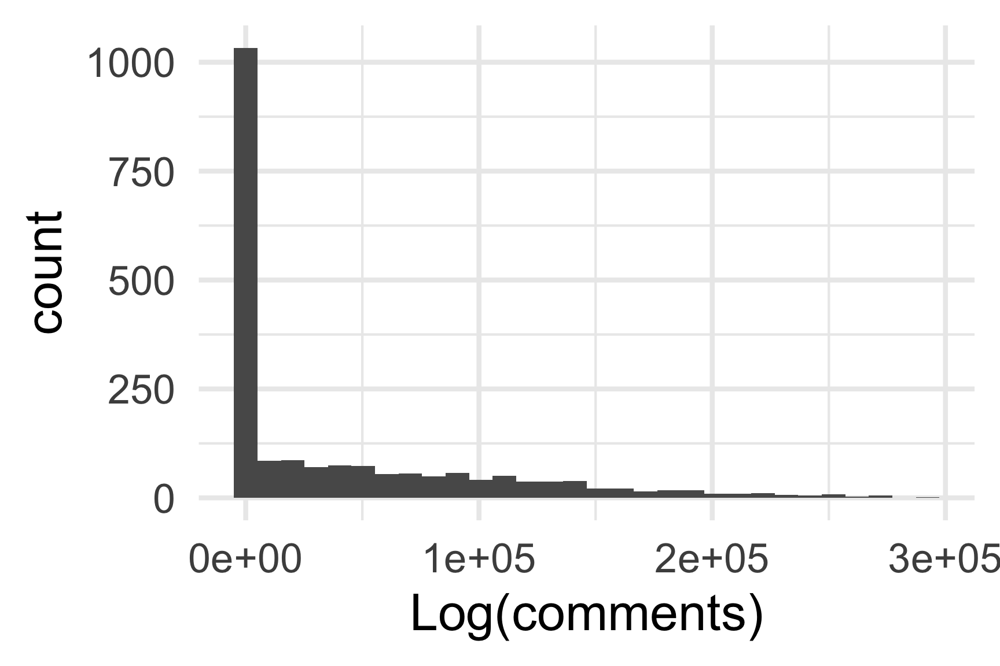

Chapter 3 Policy Influence: Do Public Pressure Campaigns Influence Bureaucratic Policymaking?
See the preanalysis plan for this chapter here.
Abstract
I assess whether public pressure campaigns increase lobbying success in agency rulemaking using a mix of hand-coding and computational text analysis methods. To measure lobbying success, I develop computational methods to identify lobbying coalitions and estimate lobbying success for all rules posted for comment on regulations.gov. These methods are validated against a random sample of 100 rules with a mass-comment campaign and 100 rules without a mass comment campaign that I hand-code for whether each coalition got the policy outcome they sought. I then assess potential mechanisms by which mass public engagement may affect policy. Each mechanism involves a distinct type of information revealed to decisionmakers. Of primary interest is the extent to which public pressure campaigns affect agency decisionmakers directly or indirectly through their effects on elected officials’ oversight behaviors. I assess whether legislators are more likely to engage in rulemaking when advocacy groups mobilize public pressure. I then assess congressional oversight as a causal mediator using a subset of rules where I collect and code correspondence from Member of Congress to agencies about proposed agency rules with and without public pressure campaigns.
3.1 Introduction
I assess the relationship between the number of public comments and the amount of change between draft and final policy texts. Next, I assess the relationship between the number of people mobilized by each campaign and whether the campaign achieved its policy goals. Finally, I theorize and test four mechanisms by which public input may affect bureaucratic policymaking. Each mechanism involves a distinct type of information that pressure campaigns may relay to policymakers: technical information, information about the likelihood of political consequences, information about the preferences of elected officials, or information about the preferences of the attentive public. Because scholarship on bureaucratic policymaking has focused on the power of technical information, where insider lobbying is most likely to matter and where outside strategies are least likely to matter, political scientists have largely overlooked mass mobilization as a tactic.
I find evidence consistent with the observable implications of mass comment campaigns influencing policymaking through \[non-null results\] but no evidence that mass engagement affects rulemaking processes or outcomes through \[null results\].
3.2 Theory
3.2.1 Incorporating political information into formal models of rulemaking
Formally, political information requires several crucial amendments to existing information-based models of rulemaking. In the most sophisticated model of notice-and-comment rulemaking to date, Libgober (2018) posits a utility function for agency \(G\) as \(u_G(x_F) = \alpha_0 x_f^2 + \sum_{i=1}^N \alpha_i u_i (x_f)\) where \(x_f\) is the spatial location of the final policy, \(u_i\) is the preference of a member of the public or “potential commenter” \(i\), and \(\alpha\) is a vector of "allocational bias"—i.e. how much the agency cares about its own preferences \(\alpha_0\) relative to accommodating the preferences of others \(\alpha_{i=1:N}\). Bureaucrats balance their own idea of their mission against their desire to be responsive. In Libgober’s model, \(\alpha\) is a fixed “taste” for responsiveness to each member of society, so agency decisions simply depend on their answer to the question “what do people want?” Including political information requires two additional parameters related to a second question “why would the agency care?”
First, like other lobbying strategies, going public may shift the strategic environment, leading an agency to shift its allocation in favor of some groups and away from others. Let this strategic shift be a vector \(\alpha_s\). Second, campaigns may directly persuade agencies to adjust their allocational bias, for example by supporting claims about the number of people the group represents or the intensity or legitimacy of their policy demands. Let this direct shift be \(\alpha_d\) and immutable taste now be \(\alpha_t\). Having decomposed an agency’s allocative bias into three parts (its fixed tastes, shifting strategic environment, and potential to be convinced), the agency’s utility function is now \(u_G(x_F) = (\alpha_{t0} + \alpha_{s0} + \alpha_{d0}) x_f^2 + \sum_{i=1}^N (\alpha_{ti} + \alpha_{si} + \alpha_{di}) u_i (x_f)\). If, after the comment period, an agency’s strategic environment is unchanged and it remains unpersuaded about which segments of society deserve favor, \(\alpha_s\) and \(\alpha_d\) are 0, and the model collapses to the original information game based on fixed taste. This less plausible when groups go public and expand the scope of conflict.
Incorperating political information allows us to begin formalizing intuitions about mechanisms of influence. For example, Libgober (2018) asks “What proportion of commenting activity can be characterized as informing regulators about public preferences versus attempting to attract attention of other political principals?” (p. 29). Adding political information to the model allows us to formalize this question: Under what conditions does the decision to comment depend on an organization’s beliefs about \(\alpha_t\) versus beliefs about \(\alpha_s\)? Empirically, we may often be able to infer that the difference in commenting can be attributed to group \(i\)’s beliefs about \(\alpha_{si}\) if the behavior of political principals varies but other observed parameter values are similar across rules at a given agency.
Rational-choice explanations of why organizations comment on proposed rules build on an intuition that potential commenters will comment only when the benefits exceed the costs of doing so. This intuition ought to apply to other lobbying strategies such as mass mobilization as well. Adding an additional lobbying strategy into the model described above is straightforward. In Libgober’s model, a potential commenter has negative quadratic preferences centered on their ideal policy \(p_i\) and \(u_i = -(x_f - p_i)^2\) where \(x_f\) is the final policy chosen by the agency. An organization will comment if the cost of doing so is less than the difference between their utility when the agency selects a policy having been informed about the organization’s ideal point \(p_i\) versus when the agency selects a policy having made a guess about the organization’s ideal point, \(z_i\). If \(c_i\) is organization \(i\)’s cost of commenting, then \(i\) will comment if it expects to be better off providing information than abstaining \(E[u_i | p_i] > E[u_i | z_i] + c_i\). Similarly, an organization will go public when it expects that the cost of running a mass mobilization campaign to be less than the difference in utility when the agency selects a policy having been informed about the intensity of broader public preferences \(p_{public}\) versus when the agency selects a policy having made a guess about the intensity of the attentive public’s preferences, \(z_{public}\). If \(c_{campaign, i}\) is organization \(i\)’s cost of running a mass mobilization campaign, then \(i\) will launch a campaign if \(E[u_i | p_{public}] > E[u_i | z_{public}] + c_{campaign, i}\). This suggests that mass mobilization with the aim of influencing policy, i.e. going public, should be more common when agencies are either poorly informed or distant from public opinion and potentially influenced by the types of political information created by mass engagement.
Additionally, an organization may comment or run a mass mobilization campaign if it benefits in ways that are independent of policy outcomes. Strategies such as "going down fighting" can be incorporated by adding exogenous benefit parameters to the utility function of the potential commenter/mobilizer. Let \(v_i\) be the benefit of commenting independent of its effect on the policy outcome, such as pleasing members or to reserving the right to sue. Let \(w_i\) be the benefit of running a mass mobilization campaign independent of its effect on the outcome of the policy at hand, such as fulfilling expectations of existing members or recruiting new members. An organizations utility function would then be \(u_i = -(x - p_i)^2 + v_i + w_i\).
Adding these parameters also resolves a puzzling result of Libgober’s model. Empirically, rules that receive comments do not always change. This result is impossible in a model where bureaucrats only have known fixed tastes and potential commenters only seek changes in policy. For policy seeking organizations to lobby but fail to influence policy requires that they may either be wrong about an agency’s allocative bias or their ability to shift it. Incorporating political information allows change and uncertainty in an agency’s biases. The result of commenting without rule change also becomes possible if commenters are allowed a strategy of “going down fighting” and incentives to do so.
3.2.2 Congressional oversight as a mediator of interest-group influence
When George W. Bush replaced Bill Clinton as president, career bureaucrats at the Federal Trade Commission knew that this meant a change in policy priorities. Many rulemaking projects initiated under the Clinton administration were likely to be withdrawn or put on hold. They also knew that the new administration wanted to be perceived as advancing a new policy agenda, not merely undoing Clinton-era regulations. Entrepreneurs within the agency saw a political window of opportunity to initiate a new regulatory agenda aimed at curbing a growing volume of telemarketing calls. This initiative seemed likely to be popular with voters but, even with a supportive president, would be difficult to advance over the objections of the telemarketing industry whose campaign donations had earned them many powerful allies in Congress. Agency officials report being pessimistic about the FTC’s telemarketing effort succeeding over opposition from Congress.
When the draft “Telemarketing Sales Rule” (also known as the “Do Not Call” rule) was published, however, public support and engagement were overwhelming. The rule received thousands of supportive comments from frustrated members of the public who were encouraged to comment by advocacy groups like the Consumer Federation of America. Agency officials report that the volume of public response not only encouraged the agency and the administration but, more importantly, “scared off” Members of Congress who the industry was relying on to kill or reverse the rule. Once it became clear that the public was paying attention and sufficiently mobilized to act on the issue, elected officials became much less willing to take unpopular positions supporting industry donors. Instead, Congress ended up codifying the agency’s authority to implement the Do Not Call regulations with legislation the following year.
The story of the Do Not Call rule suggests that public engagement in rulemaking may occasionally be influential because it affects the behavior of elected officials who have the power to provide key support or opposition to a proposed rule.
Political oversight of bureaucracies has long concerned both practitioners and theorists. Political scientists often model the relationship between elected officials and bureaucrats as a principal-agent problem. For example, an agency may have a preferred policy but, upon observing the preferences of principals, may change the rule or delay its publication. Agencies may do this to avoid political consequences such as having their policies reversed (Potter 2017b) or because they perceive elected officials as representing public demands (Cuéllar 2005). While it is widely accepted that agency officials take the positions of their principals into account, the mechanisms by which this occurs and the empirical conditions for political control are debated.
Because I focus on influence in the period between the publication of draft and final rules, I focus on information about principals’ preferences revealed to the agency in this period. Oversight during rulemaking is a form of ex-post control (Epstein and O’Halloran 1994), in this case, after the proposed rule is published. Upon learning the content of a draft rule, an official with power over the agency may choose to signal their demands to the agency. There is an ongoing debate among scholars over how political oversight operates–i.e., how principals’ observable behaviors actually inform agency decisions.
McCubbins, Noll, and Weingast (1987) suggest two oversight mechanisms. Principals may proactively attend to agency activities, like a “police patrol,” or they may rely on bureaucrats’ fear of sanction when attentive interest groups alert principals about agency activities, more like a “fire alarm.” Administrative procedures like mandatory public comment periods thus offer opportunities for direct oversight and to be alerted to oversight opportunities (Balla 1998).
3.2.3 Incorporating political information into models of political oversight
In addition to interest groups directly alerting elected officials to oversight opportunities as in the “fire alarm” model, the political information signaled by public pressure campaigns may alert elected officials to political risks (like a “warning sign”) or, conversely, to encourage the agency to hold course (like a “beacon”) attracting positive attention and credit claiming opportunities for their oversight work. In the case of the FTC’s “Do Not Call” rule and subsequent legislation, mass engagement functioned more as a “warning” for would-be opponents and a “beacon” for potential allies, effectively enabling and empowering rather than restraining the agency as the classic “fire alarm” concept suggests. Agency officials credit the public support mobilized by mass comment campaigns with the political momentum needed to hold course.
Figure 3.1: Incorporating Congressional Oversight into Model of Bureaucratic Policymaking
Mass engagement in bureaucratic policymaking may affect the behavior of an agency’s principals because the shadow of public sanction hangs over elected officials (Arnold 1979; Mayhew 2000). Moore (2018) finds that agencies that receive more comments per rule are also subject to more congressional hearings. When the public is more attentive, it is more important for officials to take popular positions and avoid unpopular ones. Thus, when a coalition goes public, especially if it generates a perceived consensus in expressed public sentiments, elected officials ought to be more likely to intervene on their behalf and less likely to intervene against them.
3.2.4 Hypotheses about the relationship between mass engagement and oversight
It may be the case that both principals and the majority of commenters hold the same position simply because it is popular. Thus, to assess the “fire-alarm,” “beacon,” and “warning sign” mechanisms, it is important to condition on principals’ existing policy positions and to control for their baseline rates of commenting. I estimate principals’ baseline rates of commenting using legislators’ comments on similar rules that did not receive a mass comment campaign.
Hypothesis 2: Elected officials’ advocacy is moderated by mass engagement.
\[hyp:beacon\] Mass commenting attract oversight from allies. The more comments supporting a position, the more likely principals holding that position are to engage.
\[hyp:warning\] Mass commenting reduces oversight from opponents. The more comments opposing a position, the less likely principals holding that position are to engage.
Hypothesis \[hyp:beacon\] implies that \(\beta_1\) is positive and Hypothesis \[hyp:warning\] \(\beta_2\) is negative in this statement: Pr(Principal Comments \(|\) Principal Position \(i\)) \(\sim \beta_0 + \beta_1\)Comments supporting \(i + \beta_2\)Comments opposing \(i\)
If Hypothesis \[hyp:beacon\] is correct, it would suggest an addendum to Hall and Miler’s (2008) finding that legislators are more likely to engage in rulemaking when they have been lobbied by a like-minded interest group: When interest groups lobby elected officials to engage in rulemaking, they may be more likely to engage when aligned with the majority of commenters than when opposed to them. If elected officials learn from political information, they will be even more likely to engage when lobbied by a coalition that includes public interest groups running a mass-comment campaign, and less likely to engage when opposed by a large mass comment campaign.23
Alternatively, the effect of mass engagement on political principals may be asymmetric. Mass engagement may only mobilize or only demobilize. For example elected officials may be attracted to oversight opportunities but not dissuaded by mobilization on the other side because they assume their voters share their position. Or, if elected officials are risk adverse, they may avoid engaging in contentious rulemaking processes regardless of the balance of comments. Each of these results would be evidence against hypothesis \[hyp:warning\] or \[hyp:beacon\] respectively.
I thus build on the classic model of political oversight in two ways. First, I suggest that elected officials’ comments are a particularly relevant oversight behavior and a mechanism by which bureaucrats learn and update beliefs about their principals’ demands. Second, I suggest that such oversight behaviors may be affected by public pressure because of the impressions of public opinion (i.e., the political information) it creates.
3.3 Testing the Theory
3.3.1 Data
I create an original dataset that combines several sources of data on U.S. federal agency rulemaking. The core data are the texts of draft and final rules and public comments on these proposed rules. This includes all 16 thousand proposed rules from 144 agencies (as defined by regulations.gov) that were open for comment on regulations.gov between 2005 and 2018, that received at least one comment from an organization, and that saw a final agency action between 2005 and 2019. There are over 50 million comments on this set of rules. I scrape draft and final rule texts from federalregister.gov and comments submitted as attachments or by mail from regulations.gov. I retrieve comments submitted directly on regulations.gov and metadata on rules and comments (such as the dates that the proposed rule was open for comment and whether the agency identified the organization submitting the comment) from the regulations.gov API. I add additional metadata on rules (such as whether the rule was considered “significant”) from the Unified Agenda published by the Office of Information and Regulatory Affairs (reginfo.gov).
The combined dataset has over 50 million observations of one public or legislator comment on a proposed rule. I attempt to identify the organization(s) that submitted or mobilized each comment by extracting all organization names from the comment text. For comments that do not reference an organization, I am often able to identify organizations with an internet search using the comment’s text. I then identify lobbying coalitions by clustering comments that use similar phrases or word frequencies. Co-signed comments are always assigned to the same coalition. Likewise, form-letter comments are always assigned to the same coalition.24
Because my hypotheses are about the influence of organizations and coalitions, for analysis, I collapse these data to one observation per organization or coalition per proposed rule and identify the main substantive comment submitted by each organization’s staff or lawyers, which are usually much longer than supporting comments like form letters. For hand-coding, I first select a random sample of 100 proposed rules with a mass-comment campaign and then selecting a matched sample of 100 proposed rules without a mass comment campaign. Matching prioritizes, presidential administration, policy area (following Policy Agendas Project coding), rule significance, department, agency, subagency, and proposed rule length, respectively.25 This hand-coded sample is several times larger than leading studies using hand-coding and includes rules with very large and small numbers of comments that previous studies exclude. The full sample is four hundred times larger.26
The most direct way to assess the hypothesis that mass engagement increases lobbying success is to assess the magnitude of the relationship between the number of comments that a coalition mobilizes and its lobbying success. However, public pressure campaigns may only be effective under certain conditions. Thus, I first assess the main relationship and then assess evidence for or against different potential causal pathways of influence.
3.3.2 The Dependent Variable: Lobbying Success
The dependent variable is the extent to which a lobbying coalition got the policy outcome they sought, which I measure in three ways.
First, on a sample of rules, I hand-code lobbying success for each lobbying coalition, comparing the change between the draft and final rule to each organization’s demands on a five-point scale from “mostly as requested” to “significantly different/opposite than requested.”
To do this, I first identify organizational comments.
For each organization, I identify the main overall demand and the top three specific demands and the corresponding parts of the draft and final rule texts.27
I then code overall lobbying success and lobbying success on each specific demand for each organization and coalition. Both the overall score and average score across specific demands both fall on the interval from -1 (“significantly different”) to 1 (“mostly as requested”).
Second, I use methods similar to automated plagiarism detection algorithms to identify changes between a draft and final rule that were suggested in a comment. Specifically, I count the number of words in phrases of at least ten words that appear in the comment and final rule, but not the draft rule. To do this, I first identify new or changed text in the final rule by removing all 10-word or longer phrases retained from the draft rule. I then search each comment for any 10-word or longer phrases shared with the new rule text and count the total number of shared words in these shared phrases. Finally, I normalize this count of “copied” words across shorter and longer comments by dividing it by the total number of words in the comment. This measure falls between 0 (zero percent of words from the comment added to the final rule) and 1 (100 percent of words from the comment added to the final rule). As a robustness check, I also use the non-normalized version of this variable, i.e. the raw number of “copied” words.
Third, I capture a broader dimension of lobbying success by modeling the similarity in word frequency distributions between comments and changes to the rule. New or changed text is identified as described above, except that I also include the rule’s preamble and the agency’s responses to comments. Agencies write lengthy justifications of their decisions in response to some comments but not others. By including preambles and responses to comments, this measure captures attention to a comment’s demands and the extent to which the agency adopts a comment’s discursive framing (i.e. the distribution of words it uses). I us cosign similarity to scale the word frequencies used by each comment relative to those in changes between draft and final rule.28 This measure falls between 0 (no common words) and 1 (exactly the same distribution of words).
To assess the performance of these automated methods (text-reuse and word-frequency similarity), I calculate the correlation between these scores and my hand-coded 5-point scale for rules in the hand-coded sample where a final rule was published. As the automated methods apply at the organization-level, coalition scores are those from the lead organization–by default, the organization(s) with the longest comment. At the coalition level, the correlation between hand-coded influence is __ with the text-reuse method and __ with the word-frequency method.
3.3.3 The Main Predictor Variable
The number of supportive comments generated by a public pressure campaign (the main variable of interest) is a tally of all comments mobilized by each organization or coalition that ran a mass-comment campaign on a proposed rule. Because the marginal impact of additional comments likely diminishes, the number of comments is logged. This does not include the main substantive comments submitted by an organization’s staff or lawyers. Nor does it include comments that are not affiliated with the organization or coalition. If an organization mobilizes more than 1000 comments or 100 identical comments on a proposed rule, I code that organization, its coalition, and the proposed rule as having a mass comment campaign. Where organizational comments are not supported by a mass comment campaign log mass comments takes a value of 0.
3.3.4 Explanatory variables
Other predictors of lobbying success in the models below are the length of the (lead) organization’s comment, whether the coalition lobbies unopposed, the size of the lobbying coalition, and whether the coalition is business-led. Comment length is normalized by dividing the number of words in the comment by the number of words in the proposed rule, thus capturing the complexity of the comment relative to the complexity of the proposed rule. The number and type(s) of organization(s) is an attribute of each coalition (e.g. a business-led coalition with N organizational members). Coalition size is the number of distinct commenting organizations in the coalition (including those that co-sign a comment). For organizations lobbying alone, coalition size is 1. A coalition is unopposed when no opposing organizations comments. I code a coalition as business-led if the majority of commenting organizations are for-profit businesses, or if upon investigation, I find it to be primarily led or sponsored by for-profit businesses.29
3.3.5 Examples of hand-coded lobbying success
2015 Waters of the United States Rule: In response to litigation over which waters were protected by the Clean Water Act, the Environmental Protection Agency and Army Corp of Engineers proposed a rule based on a legal theory articulated by Justice Kennedy, which was more expansive than Justice Scalia’s. The Natural Resources Defense Council submitted a 69-page highly technical comment “on behalf of the Natural Resources Defense Council…, the Sierra Club, the Conservation Law Foundation, the League of Conservation Voters, Clean Water Action, and Environment America” supporting the proposed rule:
“we strongly support EPA’s and the Corps’ efforts to clarify which waters are protected by the Clean Water Act. We urge the agencies to strengthen the proposal and move quickly to finalize it…”
I coded this as support for the rule change, specifically not going far enough. I also coded it as requesting speedy publication. NRDC makes four substantive requests: one about retaining language in the proposed rule (“proposed protections for tributaries and adjacent waters…must be included in the final rule”) and three proposed changes (“we describe three key aspects of the rule that must be strengthened”).30 These demands provide specific keywords and phrases for which to search in the draft and final rule text.
A coalition of 15 environmental organizations mobilized over 944,000 comments, over half (518,963) were mobilized by the four above organizations: 2421,641 by Environment America, 108,076 by NRDC, 101,496 by clean water action, and 67,750 by the Sierra Club. Other coalition partners included EarthJustice (99,973 comments) and Organizing for Action (formerly president Obama’s campaign organization, 69,369 comments). This is the upper tail end of the distribution. This coalition made sophisticated recommendations and mobilized a million people.
The final rule moved in the direction requested by NRDC’s coalition, but to a lesser extent than requested–what I code as “some desired changs.”" As NRDC et al. requested, the final rule retained the language protecting tributaries and adjacent waters and added some protections for “other waters” like prairie potholes and vernal pools, but EPA did not alter the exemptions for ditches and waste treatment systems.
Comparing the draft and final with text reuse allows us to count the number words that belong to 10-word phrases that appear in both the draft and final, those that appear only in the draft, and those that appear only in the final. For the 2015 Waters Of The U.S. rule, 15 thousand words were deleted, 37 thousand words were added, and 22 thousand words were kept the same. This means that more words “changed” than remained the same, specifically 69% of words appearing in the draft or final were part were either deleted or added.
For this coalition, the dependent variable, coalitions success is 1, coalition size is 15, business coalition is 0, comment length is 69/88, 0.78, and log mass comments is log(943,931), 13.76.
2009 Fine Particle National Ambient Air Quality Standards: In 2008, the EPA proposed a rule expanding air quality protections. Because measuring small particles of air pollution was once difficult, measurements of large particulates were allowed as a surrogate measure for fine particles under EPA’s 1977 PM10 Surrogate Policy. EPA proposed eliminating this policy, thus requiring regulated entities and state regulators to measure and enforce limits on much finer particles of air pollution.
EPA received 163 comments on the rule, 129 from businesses, business associations such as the American Petroleum Institute and The Chamber of Commerce, and state regulators that opposed the rule. Most of these were short and cited their support for the 63-page comment from the PM Group, “an ad hoc group of industry trade associations” that opposed the regulation of fine particulate matter. Six state regulators, including Oregon’s, only requested delayed implication of the rule until they next revised their State Implementation Plans (SIPs) for Prevention of Significant Deterioration (PSD). EarthJustice supported the rule but opposed the idea that the cost of measuring fine particles should be a consideration. On behalf of the Sierra Club, the Clean Air Task Force, EarthJustice commented: “We support EPA’s proposal to get rid of the policy but reject the line of questioning as to the benefits and costs associated with ending a policy that is illegal.” The EarthJustice-led coalition also opposed delaying implementation: “EPA must immediately end any use of the Surrogate Policy – either by”grandfathered" sources or sources in states with SIP‐approved PSD programs – and may not consider whether some flexibility or transition is warranted by policy considerations."
The final rule did eliminate the Surrate Policy but allowed states to delay implementation and enforcement until the next scheduled revision of their Implementation Plans. I code this as the EarthJustice coalition getting most of what they requested, but not a complete loss for the regulated coalition.
For the PM Group coalition, the dependent variable, coalitions success is -1, coalition size is 129, business coalition is 1, comment length is 63/85, 0.74, and log mass comments is 0.
For the State of Oregon’s coalition, the dependent variable, coalitions success is 2, coalition size is 6, business coalition is 0, comment length is 5/85, 0.06, and log mass comments is 0.
For the EarthJustice coalition, the dependent variable, coalitions success is 1, coalition size is 3, business coalition is 0, comment length is 7/85, 0.08, and log mass comments is 0.
3.3.6 Limitations
The two main limitations of this design both bias estimates of public pressure campaign influence toward zero.
First, lobbying success may take forms other than changes in policy texts. Agencies may speed up or delay finalizing a rule, extend the comment period, or delay the date at which the rule goes into effect. Indeed, commentors often request speedy or delayed rule finalization, comment period extensions, or delayed effective dates. I capture these potential outcomes in my hand-coding but not in the two automated methods, which apply only to observations with a final rule text. Likewise, there there is no change between draft and final rule, both automated methods necessarily record lobbying success as 0, even if a comment asks an agency to publish a rule without change.31
Second, bureaucrats may anticipate public pressure campaigns when writing draft rules, muting the observed relationship between public pressure and rule change at the final rule stage of the policy process.
3.3.7 Modeling the direct relationship
For all three measures of lobbying success, I assess the relationship between lobbying success and mass comments by modeling coalition \(i\)’s lobbying success, \(y_i\) as a combination of the relative length of the (lead) organizations comment, whether the coalition is unopposed, the coalition’s size, whether it is a business coalition, and the logged number of mass comments. I estimate OLS32 regression:
\[ y_i = \beta_0 + \beta_1 log(comments_i) + \beta_2 length_i + \beta_3 unopposed_i + \beta_4 size_i + \beta_5 business_i + \epsilon_i \]
3.3.8 Modeling mediated relationships
To estimate mediated effects, I estimate the average conditional marginal effect (ACME) and the proportion of the total effect attributed to mediation through congressional support (comments or other communication from Members of Congress supporting the coalition’s position on the proposed rule). As developed by Imai et al. (2010), this involves first estimating a model of the proposed mediator as a combination of covariates, \(X\) (length, unopposed, size, and business) and then the outcome as a combination of the mediator, congressional support, and covariates, \(X\).
Mediator model:
\[ congressional\ support_i = \beta_0 + \beta_1 log(comments_i) + \beta_{2-n} X_i + \epsilon_i \]
Outcome model:
\[ y_i = \beta_0 + \beta_1 log(comments_i) + \beta_2 congressional\ support_i + \beta_{3-n} X_i + \epsilon_i \]
3.3.9 A Census of Comments from Members of Congress in Agency Rulemaking
Through an iterative combination of automated search methods and hand-coding, I identify the elected official or organization that submitted each comment.
Figure 3.2 shows the number of comments from members of Congress received during rulemaking by a sample of federal agencies. Oversight letters are frequently co-signed by multiple members from the Senate, House, or both chambers.
Figure 3.2: Number of Letters from Members of Congress Received During Rulemaking per Year
To assess the hypothesis that mass engagement affects the engagement of political principals, I examine the relationship between mass commenting and the behavior of members of Congress, while attempting to control for other reasons that members of Congress may comment on a proposed rule. The bold arrow in figure 3.3 indicates the key relationship that I test in this step. I aim to test the relationship between mass public engagement and engagement from members of Congress, who may receive information about public opinion from mass engagement.
Figure 3.3: The Relationship Between Public Pressure and Congressional Oversight
I measure the dependent variables—legislator attention and support—in several ways. First, I count the number of times members of Congress engage the agency across rules and before, during, and after comment periods on rules where lobbying organizations did and did not go public. By engaging the agency, I mean that members of Congress raise a rule in personal correspondence or comments that members send to the agency. I then code each contact from the member of Congress and each coalition lobbying on the rule on the same three-point scale: are they asking for the rule to go further, be scaled back, or published as-is. This is similar to other hand-coding approaches to policy demands. Next, I use text analysis to compare the sentiment and rhetoric (phrases and word frequencies) used by legislators to the language used by each coalition.
3.3.10 Models testing the relationship between mass engagement and congressional oversight
There are several ways to test for a relationship between mass engagement and engagement by Members of Congress. The key explanatory variables of interest are the measures of mass engagement created in step 1 (how many and what types of comments). For simplicity, in the equations below, I only include measures related to the number of comments. Thus \(\beta_0\) is the estimate for a rule with no public comments.
In Model 1, the dependent variable is the total number of comments from Members of Congress on the rule: \(Y\) = Total comments from Congress \(\sim\) zero-inflated negative binomial, with one observation per rule. Let \(x\) be the the total number of public comments.
\[\begin{aligned} Y \sim \beta_0 + \beta_1x\end{aligned}\]
In Model 2, the dependent variable is the number of comments from Members of Congress on the rule that support the coalition or organizations in the coalition: \(Y_i\) = Total comments from Congress supporting coalition \(i\) \(\sim\) negative binomial, with one observation per coalition per rule. Let \(x_i\) be the total number of public comments supporting coalition \(i\).
\[\begin{aligned} Y_i \sim \beta_0 + \beta_1 x_i\end{aligned}\]
In Model 3, the dependent variable is the share of Congressional comments supporting the coalition: \(Y_i\) = Share of Members of Congress supporting coalition \(i\) \(\sim\) beta, with one observation per coalition per rule. Let \(z_i\) be the share of public comments supporting coalition \(i\).
\[\begin{aligned} Y_i \sim \beta_0 + \beta_1 z_i\end{aligned}\]
3.4 Results (SIMULATED)
SIMULATED DATA AND RESULTS FROM PREANALYSIS PLAN WILL BE MOVED TO AN APPENDIX
3.4.1 Simulated Data
To illustrate my planned analysis, I simulate data for each variable described above.
Dependent variable: Coalition success is drawn from a descrete distribution {-1, -.5, 0, .5, 1}.
Explanatory variables: Coalition size (a count) is drawn from a Poisson distribution. Business colation is binomial. In reality, business coalitions are more common than non-business coalitions, but here I estimate a balanced sample. I set rule pages constant at 85 and draw comment lengths from a Poisson distribution. While in reality, less than one percent of coalitions lobbying in rulemaking opt for a mass-comment campaign, I aim to gather a balanced sample, so half of the simulated data are assumed to have no mass comment campaign (comments = 1, log(comments) = 0) and the other half have a number of comments drawn from a Zero-Truncated Poisson distribution, which is then transformed to a log scale.
Table 3.1 shows ten rows of simulated data.
| rule_id | coalition_id | coalitions | coalition_unopposed | coalition_success | coalition_size | coalition_business | comment_length | comments | cong_support |
|---|---|---|---|---|---|---|---|---|---|
| 1315 | 1885 | 2 | 1 | -0.5 | 7 | 0 | 15.3 | 1 | 0 |
| 1389 | 81 | 2 | 1 | -0.5 | 18 | 1 | 12.9 | 45465 | 0 |
| 1310 | 226 | 2 | 1 | 0.5 | 8 | 1 | 20.0 | 142057 | 1 |
| 1500 | 318 | 2 | 1 | 1.0 | 2 | 1 | 10.6 | 41917 | 6 |
| 1039 | 1513 | 2 | 1 | 0.5 | 23 | 0 | 10.6 | 1 | 5 |
| 1239 | 101 | 2 | 1 | 0.5 | 9 | 1 | 11.8 | 1 | 0 |
| 1222 | 729 | 2 | 1 | 0.5 | 8 | 1 | 4.7 | 1 | 4 |
| 1205 | 808 | 2 | 1 | -0.5 | 13 | 1 | 11.8 | 156027 | 0 |
| 1071 | 1636 | 2 | 1 | 0.5 | 7 | 0 | 10.6 | 1 | 0 |
| 1411 | 85 | 2 | 1 | -0.5 | 9 | 0 | 10.6 | 64074 | 0 |
 

3.4.2 Simulated Results
Unsurprisingly this model yields no significant results (Figure 3.4, Table 3.2). With lobbying success as the dependent variable, the coefficient on the main variable of interest would be interpreted as a \(\beta_{logmasscomments}\) increase in the five-point influence scale of lobbying success for each one-unit increase in the logged number of comments.
Figure 3.4: OLS model of coalition lobbying sucess with simulated data
To assess congressional support as a mediator in the influence of public pressure campaigns on rulemaking, I estimate the average conditional marginal effect (ACME, conditional on the number of comments from Members of Congress) and average direct effect (ADE) of mass comments using mediation analysis. Model 3 in table 3.2 replaces the dependent varible (lobbying success) with the mediator variable (the number of supportive members of Congress).
| 1 | 2 | 3 | |
|---|---|---|---|
| Dependent Variable | Lobbying Success | Lobbying Success | Members of Congress in Coalition |
| (Intercept) | 0.084 | 0.096 | 2.367*** |
| (0.058) | (0.059) | (0.304) | |
| log(comments) | -0.003 | -0.003 | 0.000 |
| (0.002) | (0.002) | (0.013) | |
| comment_length | -0.005 | -0.005 | -0.010 |
| (0.004) | (0.004) | (0.020) | |
| coalition_business | 0.023 | 0.023 | -0.124 |
| (0.030) | (0.030) | (0.155) | |
| coalition_size | 0.000 | 0.000 | 0.011 |
| (0.002) | (0.002) | (0.011) | |
| coalition_unopposed | 0.002 | 0.002 | -0.035 |
| (0.028) | (0.028) | (0.145) | |
| cong_support | -0.005 | ||
| (0.004) | |||
| Num.Obs. | 2000 | 2000 | 2000 |
| R2 | 0.002 | 0.003 | 0.001 |
| R2 Adj. | -0.001 | 0.000 | -0.002 |
| AIC | 3754.5 | 3755.1 | 10373.7 |
| BIC | 3793.7 | 3799.9 | 10412.9 |
| Log.Lik. | -1870.256 | -1869.561 | -5179.835 |
| F | 0.747 | 0.854 | 0.387 |
| * p < 0.1, ** p < 0.05, *** p < 0.01 |
The average effect of the logged number of comments, conditional on letters from members of congress (the ACME) is 0, with a p value of 0.93.
The average direct effect (ADE) of the logged number of comments on lobbying success is 0, with a p value of 0.21
The Total Effect of a one-unit increase in the logged number of comments is 0, with a p value of 0.21. 0 of this is mediated through mobilizing congressional attention (p-value = 0.92).
3.5 Results (hand-coded data)
IN PROGRESS
Currently, these data only include rules where there was a mass-comment campaign, which likely explains why business coalitions are less successful than public interest coalitions. I anticipate the sign on that coeficient to be posive in the sample of rules that did not see a mass comment campaign. The contentious nature of this sample also means that there is no variation the
coalition_unopposedvariable (no coalitions in the sample with mass comment campaigns lobbied unoppossed).
3.5.1 Hand-coded Data
Dependent variable: Coalition success is the mean of hand-coded lobbying success on a five-point scale ({-2, -1, 0, 1, 2}, recoded to {-1, -.5, 0, .5, 1} for more straightforward model interpretation).
Explanatory variables: Coalition size (a count) is the number of organizations lobbying on the rule. Business colation is binomial. Comments is the total number of comments (including mass comments) mobilized by members of the coalition, which I transform to a log scale for modeling.
Table 3.3 shows a sample of coded data, summarized at the coalition level.
| docket_id | coalition_id | coalition_comment | coalition_unopposed | cong_support | coalition_size | coalition_business | coalition_success | comments |
|---|---|---|---|---|---|---|---|---|
| CFPB-2016-0025 | 14 | Church Folk | FALSE | 0 | 28 | FALSE | 1.0000000 | 28 |
| CFPB-2016-0025 | 14 | Church Folk | FALSE | 0 | 28 | TRUE | 1.0000000 | 28 |
| CFPB-2019-0006 | 70 | TRUE | FALSE | 0 | 79 | FALSE | -1.1176471 | 79 |
| CFPB-2019-0006 | 70 | TRUE | FALSE | 0 | 79 | TRUE | -1.1176471 | 79 |
| DEA-2018-0005 | 33 | HSCA | FALSE | 0 | 9 | FALSE | -1.7777778 | 9 |
| DEA-2018-0005 | 60 | PhRMA | FALSE | 0 | 3 | FALSE | 0.6666667 | 3 |
| DO-2007-0015 | 119 | TRUE;other trade associations; MasterCard | FALSE | 0 | 2 | TRUE | -2.0000000 | 2 |
| DO-2007-0015 | 112 | TRUE;National Coalition Against Gambling Expansion | FALSE | 0 | 1 | TRUE | -1.0000000 | 1 |
| DOI-2015-0005 | 56 | ORWELL WATCH | FALSE | 0 | 1 | FALSE | -2.0000000 | 1 |
| DOI-2015-0005 | 61 | ROYALTY | FALSE | 0 | 3 | FALSE | 0.0000000 | 3 |
| FEMA-2016-0003 | 58 | Pew | FALSE | 0 | 223 | FALSE | -1.8918919 | 2982 |
| FEMA-2016-0003 | 47 | NEMA | FALSE | 0 | 43 | FALSE | 0.9767442 | 43 |
| MSHA-2011-0001 | 84 | TRUE-VCA | FALSE | 0 | 1 | TRUE | -2.0000000 | 1 |
| MSHA-2011-0001 | 88 | TRUE-WTP | FALSE | 0 | 1 | TRUE | -2.0000000 | 1 |
| NPS-2018-0007 | 70 | TRUE | FALSE | 0 | 35 | FALSE | 1.9687500 | 35 |
| NPS-2018-0007 | 70 | TRUE | FALSE | 0 | 35 | TRUE | 1.9687500 | 35 |
| USCBP-2007-0064 | 6 | BBP | FALSE | 0 | 20 | FALSE | -1.2000000 | 20 |
| USCBP-2007-0064 | 22 | EBAA | FALSE | 0 | 5 | FALSE | -1.2000000 | 5 |
| USCG-2010-0990 | 9 | BoatUS | FALSE | 0 | 6 | FALSE | -1.0000000 | 6 |
| USCG-2010-0990 | 44 | NBF | FALSE | 0 | 2 | FALSE | -2.0000000 | 2 |
Figure 3.5: Hand-coded Data by Coalition
Figure 3.6: Number of Comments Linked to Hand-Coded Coalitions
3.5.2 Results
The results of this model (Figure 3.7, Table 3.4) show that ________. With lobbying success as the dependent variable, the coefficient on the main variable of interest would be interpreted as a \(\beta_{logmasscomments}\) increase in the five-point influence scale of lobbying success for each one-unit increase in the logged number of comments.
Figure 3.7: OLS model of coalition lobbying sucess with hand-coded data
To assess congressional support as a mediator in the influence of public pressure campaigns on rulemaking, I estimate the average conditional marginal effect (ACME, conditional on the number of comments from Members of Congress) and average direct effect (ADE) of mass comments using mediation analysis. Model 3 in table 3.4 replaces the dependent varible (lobbying success) with the mediator variable (the number of supportive members of Congress).
| 1 | 2 | 3 | |
|---|---|---|---|
| Dependent Variable | Lobbying Success | Lobbying Success | Members of Congress in Coalition |
| (Intercept) | 0.262 | -0.028 | 0.074 |
| (0.220) | (0.419) | (0.059) | |
| log(comments) | 0.428** | 0.372 | -0.013 |
| (0.181) | (0.242) | (0.035) | |
| coalition_businessTRUE | -0.953*** | -0.011 | -0.062 |
| (0.288) | (0.449) | (0.064) | |
| coalition_size | -0.025** | -0.023** | 0.000 |
| (0.010) | (0.011) | (0.002) | |
| coalition_unopposedTRUE | NA | NA | NA |
| () | () | () | |
| cong_support | 1.778* | ||
| (1.027) | |||
| Num.Obs. | 130 | 50 | 50 |
| R2 | 0.148 | 0.142 | 0.021 |
| R2 Adj. | 0.128 | 0.066 | -0.043 |
| AIC | 489.5 | 182.9 | -12.1 |
| BIC | 503.8 | 194.4 | -2.6 |
| Log.Lik. | -239.752 | -85.443 | 11.073 |
| F | 7.294 | 1.861 | 0.327 |
| * p < 0.1, ** p < 0.05, *** p < 0.01 |
Mediation analysis will require adding cases where coalitions lobbied unopposed, which we are much more likely to see in the sample of rules without mass comments.
The average effect of the logged number of comments, conditional on letters from members of congress (the ACME) is 0, with a p value of 0.93.
The average direct effect (ADE) of the logged number of comments on lobbying success is 0, with a p value of 0.21
The Total Effect of a one-unit increase in the logged number of comments is 0, with a p value of 0.21. 0 of this is mediated through mobilizing congressional attention (p-value = 0.92).
3.5.3 Preliminary findings
I find that more public pressure correlates with more congressional oversight. This includes comments from legislators both for and against proposed rules. For example, when the Department of the Treasury published draft rules implementing the Unlawful Internet Gambling Act of 2006, the proposal generated unusually high levels of public attention. As a result, two bipartisan groups of legislators submitted comments on the rule. One, led by the chair of the House Judiciary Subcommittee on Commercial and Administrative Law, raised concerns about the Department’s implementation of the Administrative Procedures Act. The other group of legislators, led by Senator Mike Pence, pushed back against interest-group opposition to the rule and urged the Department to go forward with the implementing rules. This case illustrates several broader trends that I observe. Members of Congress are more likely to engage in oversight when interest groups and the public pay more attention to an issue. When legislators do engage in rulemaking, they often engage on both sides of the issue, raising process or policy concerns that may push agencies in multiple directions.
3.6 Conclusion
TODO
References
Arnold, R. Douglas. 1979. Congress and the bureaucracy: a theory of influence. New Haven: Yale University Press. https://yalebooks.yale.edu/book/9780300025927/congress-and-bureaucracy.
Balla, Steven J. 1998. “Administrative Procedures and Political Control of the Bureaucracy.” American Political Science Review 92 (03): 663–73. https://doi.org/10.2307/2585488.
Cuéllar, Mariano-Florentino. 2005. “Rethinking Regulatory Democracy.” Administrative Law Review 57 (2). https://about.jstor.org/terms https://papers.ssrn.com/sol3/papers.cfm?abstract{\_}id=595181{\&}download=yes.
Epstein, David, and Sharyn O’Halloran. 1994. “Administrative Procedures, Information, and Agency Discretion.” American Journal of Political Science 38 (3): 697. https://doi.org/10.2307/2111603.
Libgober, Brian. 2018. “What biased rulemaking looks like.” https://libgober.files.wordpress.com/2018/09/what-biased-rulemaking-looks-like.pdf.
Mayhew, David R. 2000. “Electoral Realignments.” Annual Review of Political Science 3 (1): 449–74. https://doi.org/10.1146/annurev.polisci.3.1.449.
McCubbins, Mathew D., Roger G. Noll, and Barry R. Weingast. 1987. “Administrative Procedures as Instruments of Political Control.” Journal of Law, Economics, & Organization 3 (2): 243–77. https://doi.org/10.1093.
Moore, Emily H. 2018. “Polarization, Excepted Appointments, and the Administrative Presidency.” Presidential Studies Quarterly 48 (1): 72–92. https://doi.org/10.1111/psq.12417.
Potter, Rachel Augustine. 2017b. “Slow-Rolling, Fast-Tracking, and the Pace of Bureaucratic Decisions in Rulemaking.” Journal of Politics 79 (3): 841–55. https://doi.org/10.2139/ssrn.2759117.
Of course, if Members of Congress receive signals about the distribution of comments from their districts, the distribution of opinions in their district constituency may be more important. Figure \[fig:sierra\], shows that the Sierra Club requires zip code information from commenters, so mass-mobilizers may often send such information to elected officials.↩︎
The same comment text is attributed to each signatory of a comment. For more on how I identify organizations and coalitions, see Chapter 2, “Why Do Agencies (Sometimes) Get So Much Mail?”.↩︎
For more on policy area coding, see “Trends in U.S. Executive-branch Policymaking 1980-2016” in Chapter 1.↩︎
Except for comment texts and attachments, these data are available separately and combined on github.com/judgelord/rulemaking.↩︎
This does not capture rule changes on which an organization did not comment. The codebook is available here. See examples of coded cases here.↩︎
For the subset of rules with five or more organizational comments, I create a more sophisticated measure of word frequency similarity by averaging the absolute value of differences in topic proportions \(\theta\) between the comment and new rule text across 45 LDA models of all organizational comments estimated with 5 through 50 topics, normalized by the number of topics \(k_n\) and the number of models such that \(y_i\) falls between 0 (completely different estimated topic proportions) and 1 (exactly the same topic proportions), \(y_i = \sum_{5}^{n=50}(\frac{\sum|\theta_{rule\ change_i|k=n}-\theta_{comment_i|k=n}|}{n})*\frac{1}{45}\). For more on these methods of measuring textual similarity, see “Measuring Change and Influence in Budget Texts”.↩︎
For more on how I identify types of organizations and coalitions, see Chapter 2, “Why Do Agencies (Sometimes) Get So Much Mail?”.↩︎
These three aspects are: (1) “The Rule Should Categorically Protect Certain “Other Waters” including Vernal Pools, Pocosins, Sinkhole Wetlands, Rainwater Basin Wetlands, Sand Hills Wetlands, Playa Lakes, Interdunal Wetlands, Carolina and Delmarva Bays, and Other Coastal Plain Depressional Wetlands, and Prairie Potholes. Furthermore, “Other ‘Isolated’ Waters Substantially Affect Interstate Commerce and Should be Categorically Protected Under the Agencies’ Commerce Clause Authority.” (2) “The Rule Should Not Exempt Ditches Without a Scientific Basis” (3) “The Rule Should Limit the Current Exemption for Waste Treatment Systems”↩︎
Time allowing, I will hand-code a larger sample of proposed rules where no final rule was published so that these cases can be included in the analysis. Likewise, I will identify cases where organizations requested rules to be published as-is and recode these cases by hand.↩︎
See OLS model estimates with simulated data. I also estimate hand-coded lobbying success with beta regression and ordered logit, which are more appropriate but less interpretable. For the automated measures of lobbying success, I estimate beta regression models with the same variables.↩︎